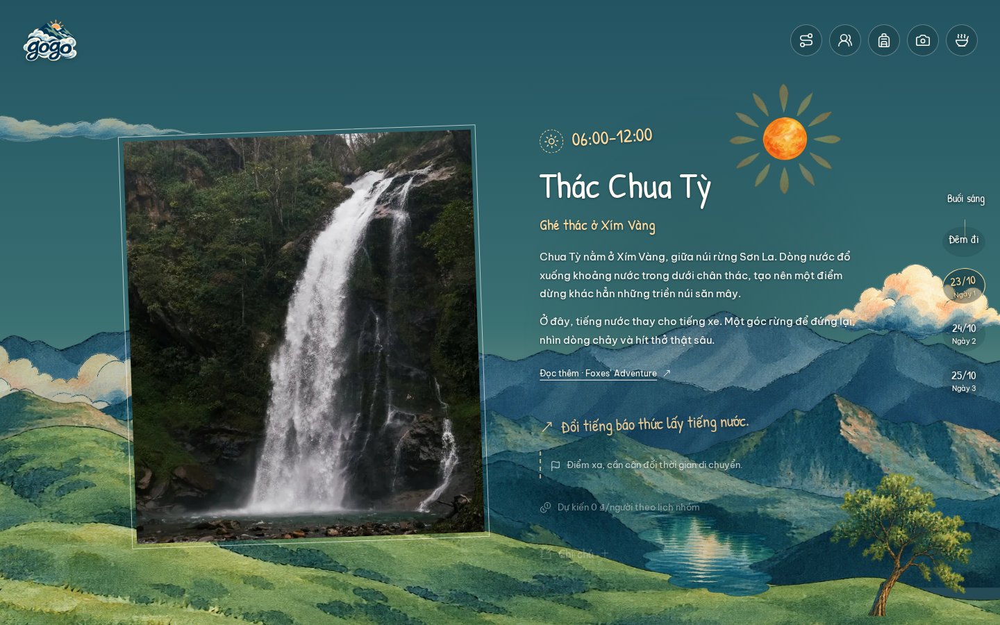
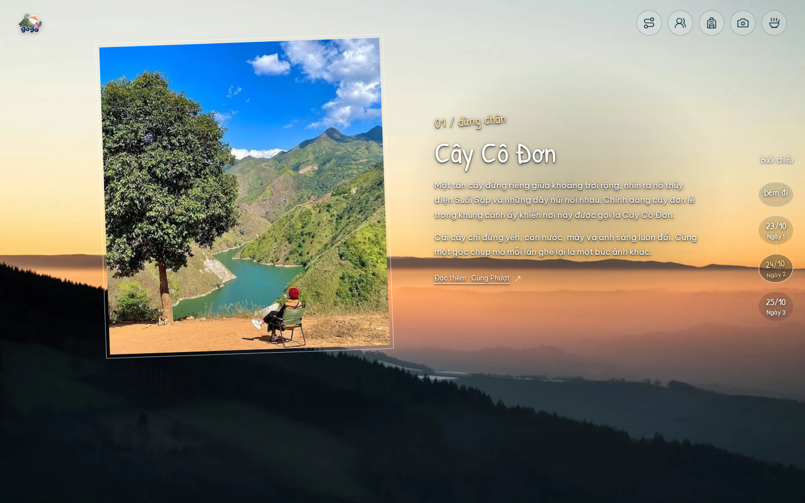
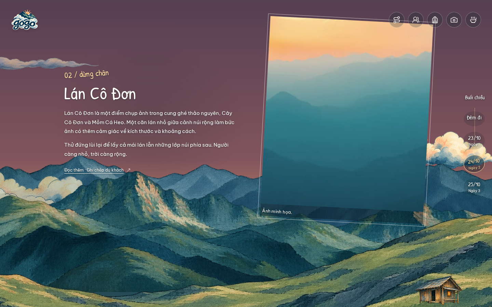
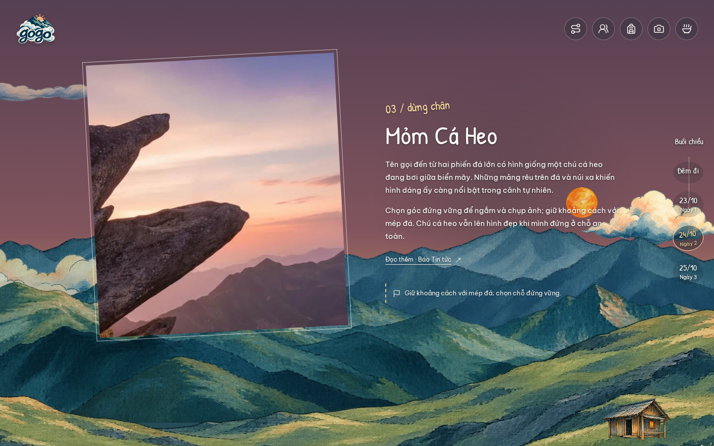
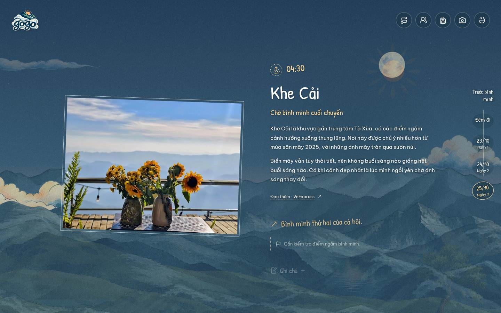
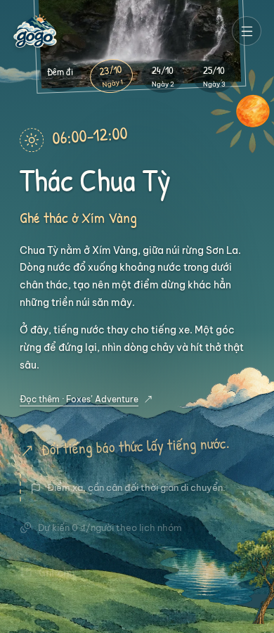
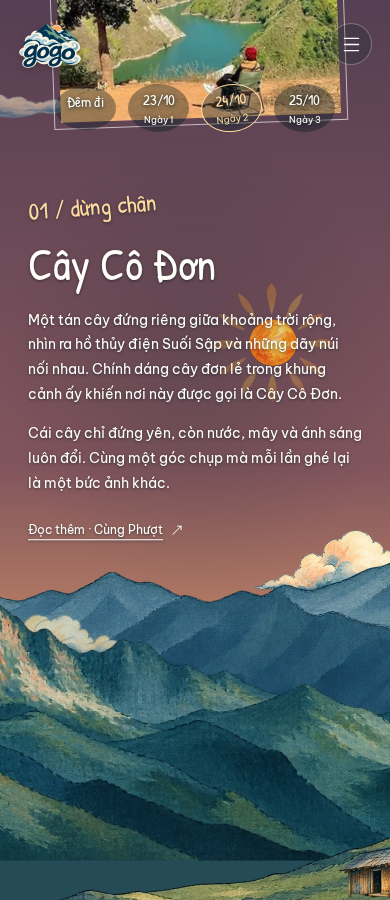
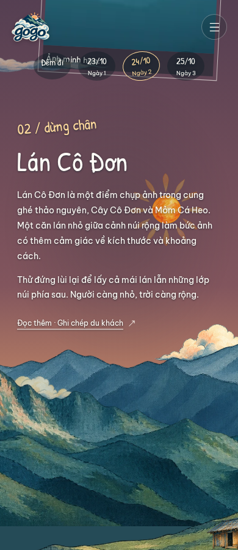
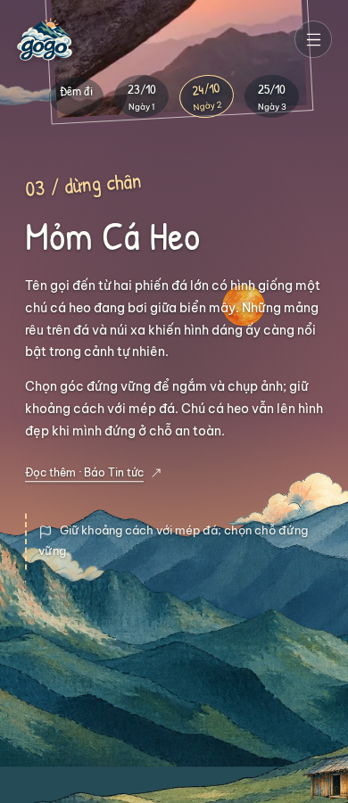
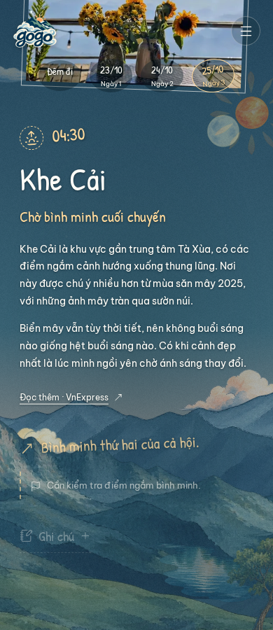

A little more about each stop.
A little more room for the scenery.
All 18 places have Vietnamese introductions and reading-source links. The travel story has about 49% more desktop and 47% more phone scroll distance. Three afternoon stops have separate reading moments within their shared, untimed event. Eight photographic changes replace the preceding sixteen.
56 focused content and pacing checks · 36 place-reading accessibility contexts · Performance measurements · Research sources
Desktop and phone Chromium emulation. Screenshots show settled reading positions; this gallery supplements the forward/reverse and scenery recordings in the main review. Physical devices and other browser engines were not tested.



















